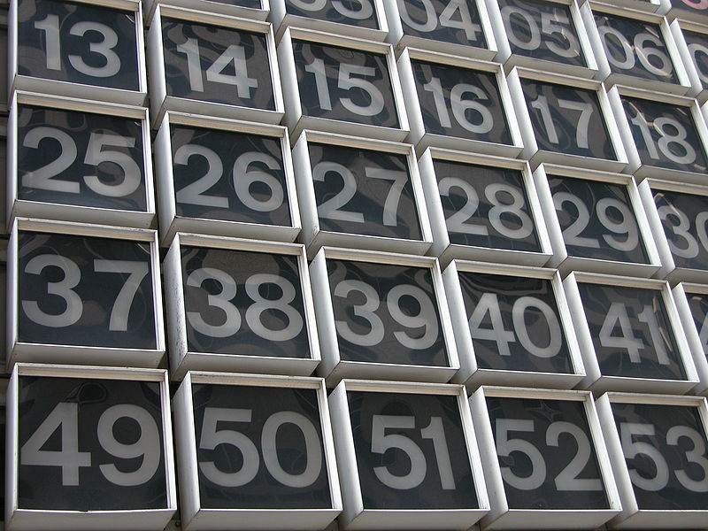
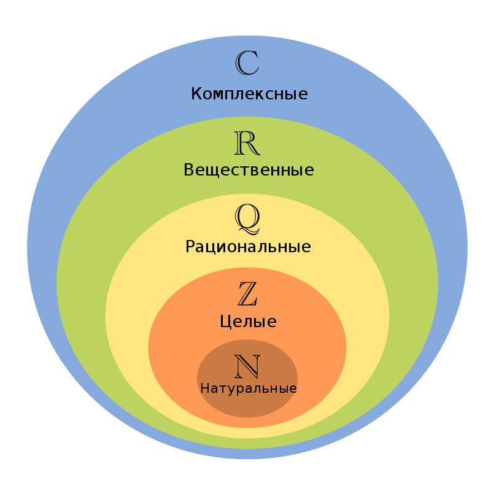
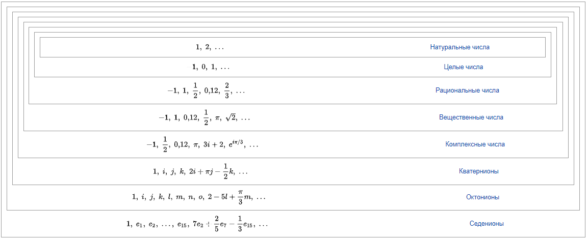

Число -
одно из основных понятий математики, используемое для количественной характеристики, сравнения, нумерации объектов и их частей.
Письменными знаками для обозначения чисел служат цифры, а также символы математических операций. Возникнув ещё в первобытном обществе из потребностей счёта, понятие числа с развитием науки значительно расширилось.
Основные числовые множества
• Натуральные числа N — числа, получаемые при естественном счёте: N={1, 2, 3...}. Иногда к множеству натуральных чисел также относят ноль, то есть N={0, 1, 2, 3...}. Натуральные числа замкнуты относительно сложения и умножения (но не вычитания или деления). Сложение и умножение натуральных чисел коммутативны и ассоциативны, а умножение натуральных чисел дистрибутивно относительно сложения и вычитания.
• Целые числа Z — числа, получаемые объединением натуральных чисел со множеством чисел противоположных натуральным и нулём, обозначаются Z={...-2, -1, 0, 1, 2,...}.Любое целое число можно представить как разность двух натуральных. Целые числа замкнуты относительно сложения, вычитания и умножения (но не деления); в общей алгебре такая алгебраическая структура называется кольцом.
• Рациональные числа Q — числа, представимые в виде дроби m/n (n ≠ 0), где m — целое число, а n — натуральное число. Рациональные числа замкнуты уже относительно всех четырёх арифметических действий: сложения, вычитания, умножения и деления (кроме деления на ноль); в общей алгебре такая алгебраическая структура называется полем. Для обозначения рациональных чисел используется знак Q (от англ. quotient).
• Действительные (вещественные) числа R — числа, представляющие собой расширение множества рациональных чисел, замкнутое относительно некоторых (важных для математического анализа) операций предельного перехода. Множество вещественных чисел обозначается R. Его можно рассматривать как пополнение поля рациональных чисел Q при помощи нормы, являющейся обычной абсолютной величиной. Кроме рациональных чисел, R включает множество иррациональных чисел I, не представимых в виде отношения целых.
• Комплексные числа C — числа, являющиеся расширением множества действительных чисел. Они могут быть записаны в виде z=x+iy, где i — т. н. мнимая единица, для которой выполняется равенство i^2= -1. Комплексные числа используются при решении задач электротехники, гидродинамики, картографии, квантовой механики, теории колебаний, теории хаоса, теории упругости и многих других. Комплексные числа подразделяются на алгебраические и трансцендентные. При этом каждое действительное трансцендентное является иррациональным, а каждое рациональное число — действительным алгебраическим. Более общими (но всё ещё счётными) классами чисел, чем алгебраические, являются периоды, вычислимые и арифметические числа (где каждый последующий класс шире, чем предыдущий).
Для перечисленных множеств чисел справедливо следующее выражение: N ⊂ Z ⊂ Q ⊂ R ⊂ C.
Данный список неполон, его можно перечислять бесконечно